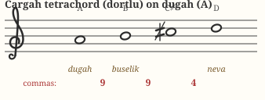
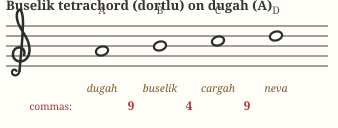
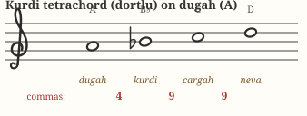
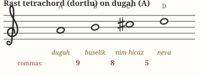
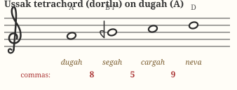
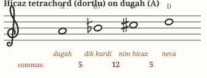

Chapter 04Building Blocks: Dörtlü & Beşli
Makam scales aren't invented note by note. They are assembled from a small kit of prefabricated parts: tetrachords (dörtlü, four notes spanning a fourth) and pentachords (beşli, five notes spanning a fifth). Learn six of these parts and you can build all five makams in this course — and dozens more.
The idea
Take the octave (53 commas) and split it at the fifth: a pentachord (31 commas) plus a tetrachord on top (22 commas) — or split at the fourth: tetrachord below, pentachord above. The note where the two parts join is almost always the makam's güçlü (dominant), which is why melodies pause there: it is a structural seam. Each part is a cins (genus) with its own name and flavor, and the makam's character is largely the sum of its two genera.
The six genera, all from the same root
To compare their colors fairly, every example below starts on dügâh (A) and ends on nevâ (D) — same frame, different interior. The comma pattern is written under each staff. Play them in sequence and listen for how the middle notes shift.
1 · Çârgâh tetrachord — T·T·B (9+9+4)
The Western major tetrachord: bright, plain, familiar. (In Turkish theory it is the textbook “neutral” genus, though pieces purely in makam Çârgâh are rare.)

2 · Bûselik tetrachord — T·B·T (9+4+9)
The Western minor tetrachord. Combined into scales it gives Nihavend its minor-key familiarity.

3 · Kürdî tetrachord — B·T·T (4+9+9)
Semitone first, then two whole tones — the Phrygian color. It supplies the descending upper part of Nihavend.

4 · Rast tetrachord — T·K·S (9+8+5)
The first genuinely microtonal genus: the third note sits one comma below where a major tetrachord would put it. Warm, round, luminous — the sound of Rast.

5 · Uşşak tetrachord — K·S·T (8+5+9)
The mirror-mood of Rast's genus: now the second note is the lowered one (segâh when built on dügâh). Plaintive and vocal; the heart of Uşşak and Hüseyni.

6 · Hicaz tetrachord — S·A·S (5+12+5)
Two tight semitone-ish steps framing a wide augmented second. Unmistakable, dramatic, instantly “eastern” to Western ears.

Each of these tetrachords also exists as a pentachord — the same pattern plus a 9-comma tanini on top (Rast beşli = 9+8+5+9, Bûselik beşli = 9+4+9+9, Hüseyni beşli = 8+5+9+9, Hicaz beşli = 5+12+5+9…). Total check: tetrachords sum to 22, pentachords to 31, always.
Assembling the five makams
| Makam | Lower genus (from tonic) | Upper genus (from güçlü) | Seam (güçlü) |
|---|---|---|---|
| Rast | Rast beşli on rast (G) | Rast dörtlü on nevâ (D) | nevâ — 5th degree |
| Nihavend | Bûselik beşli on rast (G) | Kürdî (desc.) / Hicaz-colored (asc.) dörtlü on nevâ | nevâ — 5th degree |
| Uşşak | Uşşak dörtlü on dügâh (A) | Bûselik beşli on nevâ (D) | nevâ — 4th degree |
| Hüseyni | Hüseyni beşli on dügâh (A) | Uşşak dörtlü on hüseynî (E) | hüseynî — 5th degree |
| Hicaz | Hicaz dörtlü on dügâh (A) | Rast beşli on nevâ (D) | nevâ — 4th degree |
Two things to notice. First, Uşşak and Hicaz split their octave at the fourth (tetrachord below, pentachord above); the others split at the fifth. Second, genera recombine freely: Rast's pentachord reappears as Hicaz's upper half; Bûselik serves Nihavend from the tonic but Uşşak from the güçlü. This modularity is the engine of the whole makam system — and of geçki (modulation), where a melody borrows a genus from another makam mid-phrase.